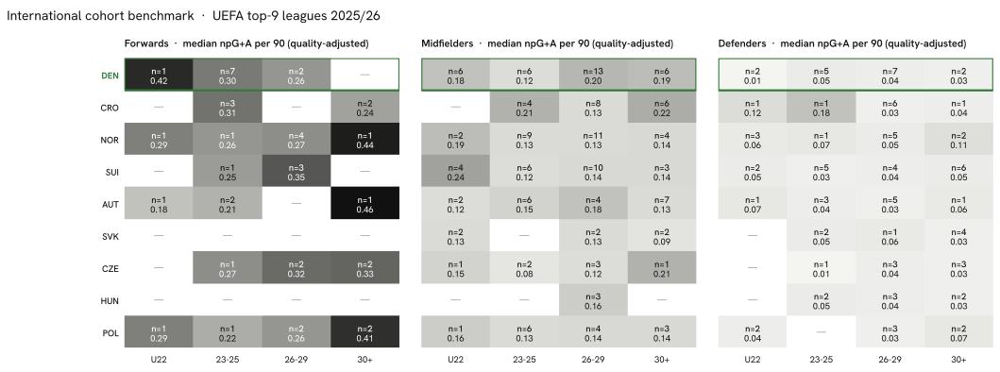

Summary · Question 3 of 14
Explore the data
Benchmark vs peer countries
Structural benchmark vs peer countries
The tables below count Danish players in the top-9 leagues by position group and age cohort against the peer countries, from the same season tables as every other count in the atlas.
Cohort gaps — forwards
| Cohort | U22 | 23-25 | 26-29 | 30+ |
|---|---|---|---|---|
| Denmark | 1 | 7 | 2 | — |
| Norway | 1 | 1 | 4 | 1 |
| Switzerland | — | 1 | 3 | — |
| Austria | 1 | 2 | — | 1 |
| Czechia | — | 1 | 2 | 2 |
Cohort gaps — midfielders
| Cohort | U22 | 23-25 | 26-29 | 30+ |
|---|---|---|---|---|
| Denmark | 6 | 6 | 13 | 6 |
| Norway | 2 | 9 | 11 | 4 |
| Switzerland | 4 | 6 | 10 | 3 |
| Austria | 2 | 6 | 4 | 7 |
| Czechia | 1 | 2 | 3 | 1 |
Cohort gaps — defenders
| Cohort | U22 | 23-25 | 26-29 | 30+ |
|---|---|---|---|---|
| Denmark | 2 | 5 | 7 | 2 |
| Norway | 3 | 1 | 5 | 2 |
| Switzerland | 2 | 5 | 4 | 6 |
| Austria | 1 | 3 | 5 | 1 |
| Czechia | — | 1 | 3 | 3 |
* Count and median npG+A per 90 of players with the country's nationality in a top-9 league, 2025/26, at least 450 minutes; cohort by age at the season's calendar turn (start year + 1 − birth year). 5 of the 9 countries are shown; the heatmap above carries all of them. Largest Danish shortfalls against the peer median count: forwards 30+ (0 vs 1), defenders 30+ (2 vs 2), defenders U22 (2 vs 1).
The full picture, all nine peer countries at once, as a heatmap:

Observations
Per capita: rank 1 of 9 · The largest cohort gap: forwards 30+ · Trajectories 2024/25 → 2025/26: mostly stable
Per capita: rank 1 of 9
75 Danish players on 2025/26 rosters of the nine strongest leagues give 12.58 per million inhabitants, rank 1 of 9. Denmark leads with 12.58, 1.0 times the Danish density. Below Denmark: Croatia, Norway, Switzerland, Austria, Slovakia, Czechia, Hungary, Poland.
The largest cohort gap: forwards 30+
Counting 2025/26 top-9 players by position group and age cohort and comparing the Danish count with the median of the other eight peers, the three largest shortfalls are forwards 30+ — 0 Danish against a peer median of 1; defenders 30+ — 2 Danish against a peer median of 2; defenders U22 — 2 Danish against a peer median of 1. The cohort tables above show the medians behind the counts.
Trajectories 2024/25 → 2025/26: mostly stable
79 Danish-eligible players had at least 900 minutes in both 2024/25 and 2025/26: forwards 13 (4 up, 5 stable, 4 down); midfielders 37 (8 up, 25 stable, 4 down); defenders 29 (1 up, 25 stable, 3 down). A move counts as up or down when league-adjusted goals + assists per 90 changed by more than 0.05; 55 of 79 stayed within that band. These are season-over-season deltas, not projections.